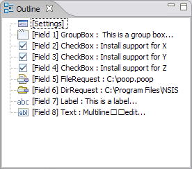

Source Editor
The Source Editor provides a text-based interface for editing InstallOptions scripts. It also validates the InstallOptions script dynamically as text is modified, and indicates errors and warning in the Problems view as well as the vertical and outline rulers. Additionally, the editor offers the following features:
Vertical and Overview Rulers
The vertical ruler is to the left of the editing area in the source
editor and is used to show text ranges and line-based annotations (e.g.,
problems, bookmarks, tasks, etc.) adjacent to their text line.
The overview ruler is on the right hand side of the editing area, and is used
to show annotations concerning the entire script. These annotations are
shown relative to their position in the script and do not move as the user
scrolls the script source. There usually is a corresponding annotation on
the vertical ruler when that portion of the script is visible.
Code Outline
The source editor includes a code outline view for the currently-active InstallOptions script. The outline view lists sections in the InstallOptions INI script, and updates dynamically as text is modified in the source editor.

Code Folding
The source editor supports folding of sections in the InstallOptions INI script. Click on the image below for a preview of how folding works in the source editor.
Previous | Contents | Next
Copyright © 2004, 2005 Sunil Kamath (IcemanK).